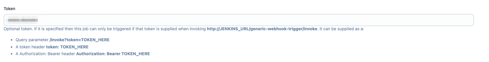
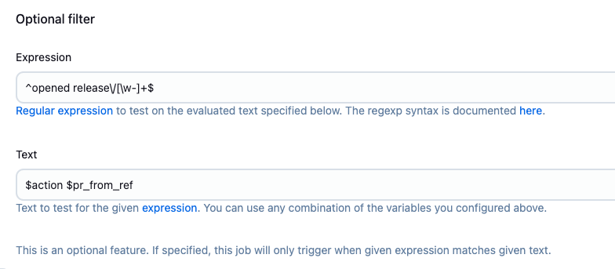
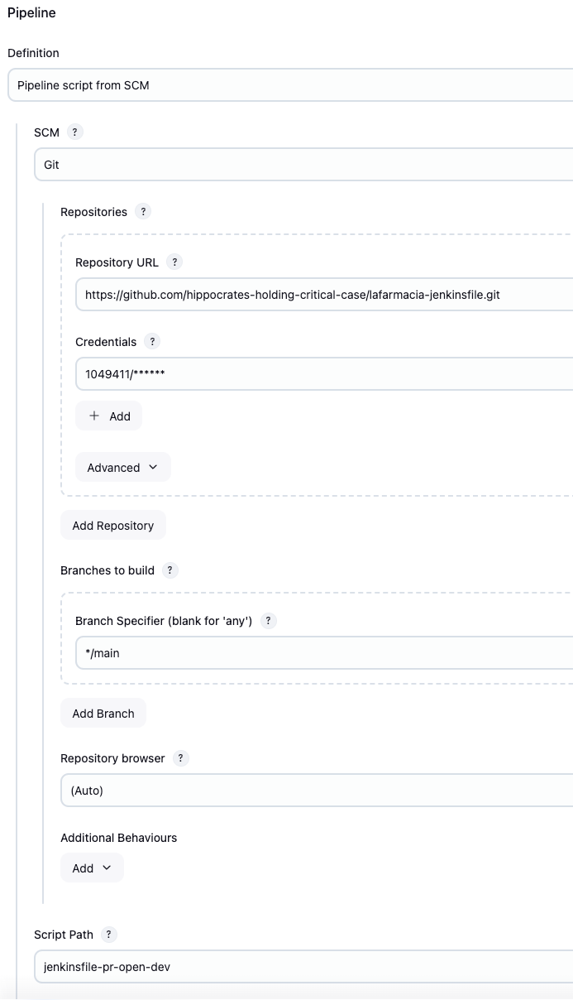

Jenkins
Jenkins il software di CI utilizzato per eseguire la build delle immagini degli applicativi e la loro pubblicazione sul container registry. E' inoltre responsabile della configurazione delle risorse Kubernetes che verrano pushate sui repository di CD.
installato nel namespace jenkins del cluster Management.
Installazione
Jenkins e i componenti ad esso legati sono deployati sul cluster attraverso FluxCD. I file manifest sono stati caricati sul repository GitHub c-hippocrates-c2377-topfarmacia.
Jenkins e i componenti necessari per il suo funzionamento sono deployati tramite risorse HelmRelease.
Jenkins dotato di persistenza e usa un block storage da 10 GB.
Applicativo
Jenkins comprende una serie di plugins necessari all'autenticazione utente, accesso ai repository GitHub, trigger e utility per le pipeline. In particolare, nella parte Jenkins Configuration as Code (JCasC), presente la parte relativa all'autenticazione utente tramite GitHub. Le pipeline vengono eseguite attraverso l'uso degli agent. Ogni agent un pod che esegue la pipeline. Data la configurazione del cluster a 3 nodi con 16GB di Ram per nodo, stata impostata una anti affinity rule per fare in modo che solo un agent per nodo possa essere esguito. Eventuali altri agent verranno messi in coda e fatti partire appena uno dei tre agent in escuzione termina.
La configurazione dei progetti effettuata manualmente.
Accessi
Networking
Jenkins raggiungibile dal seguente link.
Tramite annotation, configurata una lista di IP dai quali possibile raggiungere Jenkins. Gli IP autorizzati sono i seguenti:
109.233.125.62/32: IP ufficio Criticalcase176.221.51.59/32: IP VPN IPsec Criticalcase134.255.171.24/32,134.255.171.20/32: IP del cliente- tramite GitHub Action vengono aggiunti e mantenuti aggiornati gli IP di Github, necessari affinch Jenkins possa ricevere i webhook al verificarsi di eventi sui repository monitorati.
Autenticazione e autorizzazione
L'accesso avviene tramite autenticazione GitHub, l'accesso consentito ad utenti che partecipano all'organizzazione condivisa hippocrates-holding-critical-case.
Viene utilizzata la GitHub OAuth App Jenkins per effettuare l'autenticazione tramite le utenze GitHub.
Il clientSecret necessario per utilizzare la OAuth App memorizzato nel secret github-auth-credentials.
La gestione dei permessi legata ai team GitHub. Tutti gli utenti appartenenti al team criticalcase o hippocrates-holding nell'organizzazione hippocrates-holding-critical-case possono accedere come admin.
Jenkins dispone di un proprio gestore di credenziali dove possibile trovare le credenziali utilizzate dalle pipeline per l'autenticazione a GitHub (repository), Harbor e Vault.
Suddivisione Siti e ambienti
I progetti Jenkins legati ai siti lafarmacia.it e topfarmacia.it sono suddivisi attraverso l'uso di folder, quindi le pipeline in esse contenute sono ulteriormente suddivise per:
- tipo di evento github ricevuto (pr opened/closed) per gli ambienti temporanei che saranno generati a fronte dell'apertura di una Pull Request o distrutti a fronte della close della PR
- ambiente e tipo di evento github ricevuto (push) per quanto riguarda gli ambienti sempre attivi: main, staging e production
Pipeline
La configurazione delle pipeline in Jenkins ottenuta manualmente utlizzando in prima istanza la GUI e in seguito il relativo Jenkins file.
La parte configurata attraverso la GUI si occupa di definire il trigger che far scattare la pipeline, in particolare utilizziamo il plugin "Generic Webhook Trigger" che ci permette un maggior controllo nella configurazione. Da GitHub riceviamo un json per ogni repository applicativo opportunamente configurato con i webhooks, a fronte di eventi specifici che sono Pushes e Pull requests. Questo plugin permette di attivare la pipeline in maniera puntuale e di parsare velocemente il Json ricevuto. Esempio lafarmacia-web-app webhook.
Inoltre il plugin ci permette di configurare e valorizzare delle variabili con il contenuto del json ricevuto, che saranno utilizzate nella pipeline.
Ad esempio analizzando la pipeline feature-bugfix-pr-open con i log della PR numero 23 abbiamo:
| variabile | path json | valore |
|---|---|---|
| action | $.action | opened |
| pr_from_ref | $.pull_request.head.ref | bugfix/LFIT-965-Error-in-handling-trailing-slashes |
| pr_number | $.number | 23 |
| pr_branch_prefix | $.pull_request.head.ref | bugfix/LFIT-965-Error-in-handling-trailing-slashes |
Inoltre ci permette di definirne il token che verr usato da Github per richiamare la pipeline

e di scrivere delle regex per attivare la pipeline solo e quando effettivamente stata aperta un Pull Request o eseguita una Merge su uno specifico branch del repository. Per esempio prendendo a riferimento la stessa pipeline e PR analizzata sopra, abbiamo nel Filter:

che significa che quando la stringa $action $pr_from_ref fa il match con ^opened (feature|bugfix)\/[\w-]+$, allora la pipeline deve essere eseguita e proseguire.
Infine ci permette di definire il Jenkins File corretto che sar eseguito per quel tipo di pipeline.

Pipeline per ambienti temporanei
Il flusso di sviluppo del cliente, prevede che dal branch main che corrisponde all'ambiente dev su kubernetes, gli sviluppatori creino dei nuovi branch temporanei che sono indicati dai prefissi:
feature-*bugfix-*hotfix-*release-*
Lo sviluppo avviene in locale fino a quando non viene aperta una Pull Request da uno di questi branch. In seguito a questo evento, grazie alle pipeline di Jenkins di tipo pr open, verranno create le definizioni delle risorse kubernetes relative all'ambiente di sviluppo sul repository di CD, le quali, tramite ArgoCD, verranno automaticamente sincronizzate sul cluster di dev e rese disponibili allo sviluppatore per i test all'indirizzo [nomebranch]-[numeroPR].dev.[top|la]farmacia.it.
L'ambiente creato sar disponibile fino a quando la PR non verr chiusa. A seguito di questo evento, grazie alle pipeline di Jenkins di tipo pr close, la definizione delle risorse kubernetes per l'ambiente temporaneo verranno eliminate sul repository di CD. Tramite ArgoCD le risorse kubernetes verranno eliminate dal cluster di dev grazie alla sincronizzazione automatica col repository di CD.
Pipeline per ambienti permanenti
I branch per gli ambienti permanenti sono:
main(dev.[top|la]farmacia.it)stagin(staging.[top|la]farmacia.it)production([top|la]farmacia.it, www.[top|la]farmacia.it)
Quando viene eseguita una Merge di una Pull Request verso questi rami o una Push, grazie alle pipeline di Jenkins di tipo push verranno aggiornati i tag dell'applicazione nella definizione delle risorse kubernetes per l'ambiente permanente nel repository di CD. Tramite ArgoCD, le risorse kubernetes verranno sincronizzate automaticamente sul cluster di dev per gli ambienti di dev e staging, mentre rimangono in attesa di sincronizzazione manuale sul cluster di produzione. Per questo ambiente sar il cliente a decidere quando lanciare la sincronizzazione tramite GUI di ArgoCD.
Jenkins files per ambienti temporanei
Apertura PR
Il jenkins file che viene chiamato dalle pipeline di tipo pr open, all'apertura di una PR su di un branch monitorato :
- jenkinsfile-pr-open-dev (lafarmacia|topfarmacia)
La struttura composta da blocchi:
- enviroment: dove sono definite le variabili da utilizzare successivamente
- stages: dove sono definiti gli stage ovvero dei blocchi di codice che verranno eseguiti. In particolare:
- tramite api di GitHub, viene pubblicato un commento nella PR aperta che informa sullo stato della pipeline di Jenkins
- viene controllato che il nome del branch rispetti la naming convention richiesta per le risorse kubernetes, in quanto esse possono contenere solo caratteri alfanumerici e trattino e possono essere lunghe al massimo 63 caratteri. Il nome del branch viene trasformato in minuscolo
- utilizzando le credenziali inserite in Jenkins, viene eseguito il
git clonedel repository dell'applicativo, quindi ilgit checkoutdel branch corretto. - Viene eseguito il login a Vault tramite credenziali memorizzate in Jenkins. Viene scaricato da Vault il secret env di default necessario all'ambiente
[top|la]farmacia/[feature|bugfix|hotfix|release]/env. Se presente in Vault il secret opzionale[top|la]farmacia/[feature|bugfix|hotfix|release]/[nomebranch]-[prnumber]/env(es./lafarmacia/bugfix/LFIT-965-Error-in-handling-trailing-slashes-12/env) viene scaricato e mergiato al default. Sempre utilizzando le credenziali presenti in Jenkins, viene seguita la build dell'immagine docker e la sua pubblicazione verso Harbor - utilizzando le credenziali inserite in Jenkins, viene eseguito
git pulldel repository di CD (topfarmacia|lafarmacia). Viene copiato il template dell'application di ArgoCD sottoargo/dev/applications/[nomebranch]-[prnumber].yaml; su questo yaml viene aggiornato il tag dell'immagine attraversosed. Viene copiato il contenuto della cartella argo/templates/dev/ nella cartellaargo/dev/[nomebranch]-[prnumber]. Il contenuto sono i file yaml delle definizioni delle risorse kubernetes. Su queste risorse viene aggiornato il tag e il nome dell'imagine attraversosed. Viene infine eseguitogit add, git commit e git push. - ArgoCd vedr le modifiche e proceder alla sincronizzazione automatica delle risorse kubernetes sul cluster di dev
- post: codice che verr eseguito al termine della pipeline in caso di eventi di successo, fallimento o interruzione della pipeline. In particolare viene aggiornato il messaggio precedentemente pubblicato nei commenti della PR con il risultato dell'esecuzione della pipeline di Jenkins e relativo link all'ambiente pubblicato in caso si successo.
Chiusura PR
Il jenkins file che viene eseguito dalle pipeline di tipo pr close, alla chiusura di una PR su di un branch monitorato :
- jenkinsfile-pr-close-dev (lafarmacia|topfarmacia)
La struttura composta da blocchi:
- enviroment: dove sono definite le variabili da utilizzare successivamente
- stages: dove sono definite gli stage ovvero dei blocchi di codice che verranno eseguiti, in particolare:
- il nome del branch viene trasformato in minuscolo
- utilizzando le credenziali inserite in Jenkins, viene eseguito
git pulldel repository di CD (topfarmacia|lafarmacia). Vengono cancellati il file dell'application di ArgoCDargo/dev/applications/[nomebranch]-[prnumber].yamle la cartella contenente le risorse kubernetesargo/dev/[nomebranch]-[prnumber]. Viene infine eseguitogit add, git commit e git push. - ArgoCd vedr le modifiche e proceder alla sincronizzazione automatica delle risorse kubernetes sul cluster di dev
Jenkins files per ambienti permanenti
Il jenkins file che viene chiamato dalle pipeline di tipo push a seconda dell'ambiente :
- jenkinsfile-push-main (lafarmacia|topfarmacia)
- jenkinsfile-push-staging (lafarmacia|topfarmacia)
- jenkinsfile-push-production (lafarmacia|topfarmacia)
La struttura comune a tutti e tre i files tranne per qualche piccola differenza legata al branch e ai nomi utilizzati nelle risorse kubernetes ed composta da blocchi:
- enviroment: dove sono definite le variabili da utilizzare successivamente
- stages: dove sono definiti gli stage ovvero dei blocchi di codice che verranno eseguiti, in particolare:
- viene valorizzata la variabile
BUILD_IDENT_SHORTutilizzando lo sha del commit come valore, sar il tag dell'immagine - utilizzando le credenziali inserite in Jenkins, viene eseguito il
git clonedel repository dell'applicativo, quindi ilgit checkoutdel branch corretto. Viene eseguito il login a Vault tramite credenziali memorizzate in Jenkins. Viene scaricato da Vault il secret env di default necessario all'ambiente[top|la]farmacia/[main|staging|prd]. Sempre utilizzando le credenziali presenti in Jenkins, viene eseguita la build dell'immagine docker e la sua pubblicazione verso Harbor - utilizzando le credenziali inserite in Jenkins, viene eseguito
git pulldel repository di CD (topfarmacia|lafarmacia). Attraverso l'uso dised, viene aggiornato il tag dell'immagine nella definizione delle risorse kubernetes per l'ambiente permanente. Viene infine eseguitogit add, git commit e git push - ArgoCD vedr le modifiche e proceder alla sincronizzazione automatica delle risorse kubernetes sul cluster di dev per gli ambienti di dev e staging. Per l'ambiente di produzione il cliente dovr procedere alla sincronizzazione manuale tramite GUI di ArgoCD quando lo riterr opportuno
Monitoring
Le metriche di Jenkins vengono esportate tramite ServiceMonitor.
Sono stati configurati due alert:
- JenkinsOffline: notifica se l'applicativo Jenkins risulta offline utilizzando le metriche custom esportate da Jenkins
- JenkinsNotRunning: notifica se non sono presenti pod di Jenkins in stato Running.
Backup
Il backup di Jenkins eseguito attraverso un cron che lancia successivamente uno script di backup.
Lo script si occupa di configurare il pod con i tools necessari, quindi tramite kubectl lancia un comando tar e gz sul pod di Jenkins per la directory /var/jenkins_home (la home di Jenkins contiene tutte le configurazioni) escludendo la master.key salvata su Sherlock. Infine copia localmente l'archivio ottenuto e ne fa upload sull'object storage di backup.
I backup vengono memorizzati sull'object storage hippocrates-holding-management-backup-bucket sotto il path /jenkins-backup. Le credenziali per accedere al bucket sono memorizzate nel secret bucket-credentials.
Restore
Per poter restorare un Backup di Jenkins necessario:
- scaricare l'archivio di backup in locale dal bucket
hippocrates-holding-management-backup-bucket/jenkins-backuptramite la console di Linode. - copiare l'archivio scaricato che si vuole restorare nel pod di jenkins sotto la directory
/tmp. Per copiare il backup sul pod di jenkins eseguire ad esempiokubectl cp jenkins-backup-12.tar.tar jenkins-0:/tmp - collegarsi al pod di Jenkins sul cluster di management con
k exec -it jenkins-0 -- bash - cancellare tutto il contenuto sotto
/var/jenkins_homenel pod di Jenkins tramite il comandocd /var/jenkins_home && rm -rf * - dalla cartella
/tmprestorare l'archivio contar -xzvf jenkins_backup.tar.gz -C /var/jenkins_home - copiare la
master.keyda sherlock e sostituire o creare lamaster.keycorretta nel pod di Jenkins con:echo -n "the long master key from sherlock">/var/jenkins_home/secrets/master.key - eseguire un restart del pod di Jenkins tramite
kubectl delete pod jenkins-0
Attenzione: possibile restorare solo in parte l'archivio rimuovendo le singole directory o files nel pod di Jenkins e copiandole dall'archivio di backup come ad esempio la directory plugins. In questo caso non necessario restorare la master.key.